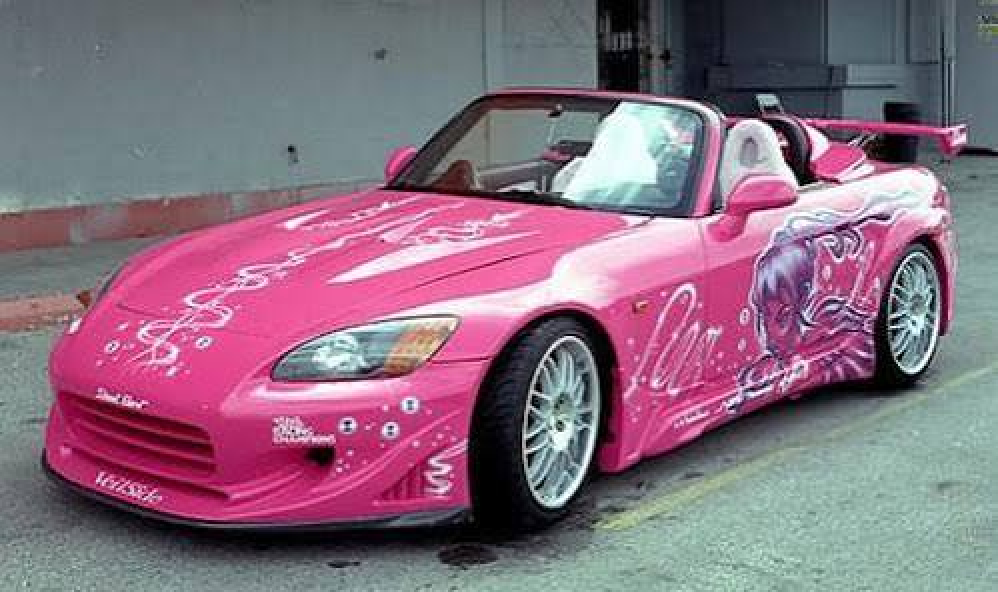

← Назад до слайдера
honda s2000
Знімалося в фільмі Подвійний форсаж

Характеристика
Двигун: Високообертистий 2.0-літровий атмосферний двигун F20C, здатний розкручуватися до 9000 об/хв.
Потужність: Близько 240 к.с. у заводській версії, але з додатковим тюнінгом для вуличних перегонів.
Трансмісія: 6-ступінчаста механічна коробка передач з коротким і чітким ходом перемикання.
Привід: Задній, що робило її маневровою та швидкою на крутих поворотах.
Зовнішній вигляд: Яскравий рожевий колір (Pink S2000), яким керувала Суіні (Suki) у фільмі «Подвійний форсаж».
Особливості: Повний кастомний обвіс APX, спойлер у формі ластівчиного хвоста, ексклюзивні диски та ефектний стрибок на розвідному мосту під час гонки.